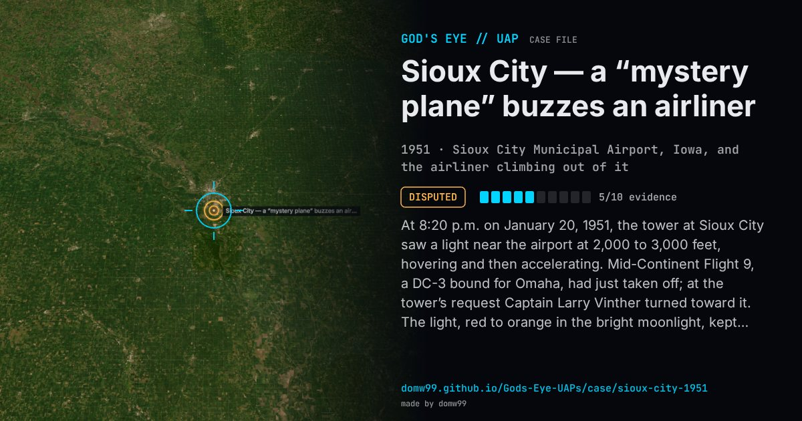

Sioux City — a “mystery plane” buzzes an airliner

At 8:20 p.m. on January 20, 1951, the tower at Sioux City saw a light near the airport at 2,000 to 3,000 feet, hovering and then accelerating. Mid-Continent Flight 9, a DC-3 bound for Omaha, had just taken off; at the tower’s request Captain Larry Vinther turned toward it. The light, red to orange in the bright moonlight, kept pace in wide arcs, blinked like running lights when asked, and showed a landing-light glare. Then it dived, passed under the airliner and, as Vinther turned his head, was flying beside them, some 200 feet off, in the same direction: against the moon he saw a fuselage like a B-29’s and an absolutely straight wing. Then it was gone to the north-west. An Air Force colonel from Offutt, who was investigating flying saucers, was aboard; his aide saw it. Vinther wrote it up for Flying magazine, and James McDonald raised it with Congress in 1968.
Explanation
The Air Force file evaluates it as a B-36 bomber, which an investigator found had been in the area. Edward Ruppelt, who later headed Project Blue Book, did not believe it: a B-36 “could not do what the UFO had done”, he wrote, buzzing a DC-3 in an airport traffic pattern and reversing course almost at once. No better explanation has been given.
What was seen
Shape: A red light, then the silhouette of a large aircraft with a fuselage like a B-29’s and a straight wing
Witnesses: Two control-tower operators; Captain Larry W. Vinther and co-pilot Jim Bachmeier of Mid-Continent Airlines Flight 9; Colonel Matthew Thompson’s aide, a passenger
Duration: About 14 minutes from the tower
Sources
- Project Blue Book file — Sioux City, Iowa, 20 January 1951 (Internet Archive)
- Wikipedia — Sioux City mystery plane incident
Browse
- United States
- 1950s
- Disputed
- Aviation encounters
- Official government documents
- Many independent witnesses
- Military witnesses
- Pilot and aircrew witnesses
- Lights and fireballs